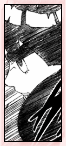
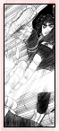

| » vs. Kimimaro ;
Kimimaro is the first person Lee duals upon his reappearance in chapter 209, where he saves Naruto from an attempted blow by Kimimaro. From there, he engages in a battle with Kimimaro. Lee had taken off the moment the medical staff took their eyes off of his bed. He was eager to rejoin his Leaf comrades in finding Sasuke. Incidentally, in his eagerness he mistook a sake bottle for his medicine bottle and brought it along. For any other ninja, it wouldn't have been that big of a deal. But for Lee, sake has an unusual effect on him. A small amount of sake instantly turns Lee into a drunk maniac. It's ironic, since one of Lee's moves is (Drunken Fist). Although Lee displays all signs of a drunk person (inbalance, hiccups, slurred speech), he is paradoxically a better fighter when drunk. Not only does he become more unpredictable (more so due to his drunkness than his actual intentions), his speed also seems to increase. As a result, Kimimaro fails to read Lee's movements or land any attacks, which allows Lee to freely beat him up in return. As a resort, Kimimaro unleashes his ultimate ability, scratching Lee with his ribs (yup, ribs) and sobering him. Kimimaro's blood inheritance limit manipulates the formation of bones. He may freely control how and where his bones can grow and jab, and uses them for unpredictability. Even in the midst of a serious battle with Kimimaro, Lee manages some humor by pausing the battle and asking to be allowed to drink his "medicine" before continuing. As much as it is humorous, it shows that Lee knows to take better care of his health. He also realizes that he must not risk any high level moves that could do self-damage. It seems he matured over the course of his healing. Despite that, Lee opens the first gate and uses the Omote Renge. Regardless, it fails, and Lee was at a disadvantage until Gaara saves him from a attempted blow. Overall, Lee did well to hold Kimimaro off and giving Naruto a chance to go search for Sasuke. That was the whole point of Lee intercepting. It's just as well that Lee didn't overexert himself, as he was still recovering from Tsunade's surgery at the time. « reverse |
PRELUDE GENERAL Naruto Terms Chakra LEE First Glance Personality Techniques Fighting Style Transition Weaknesses Analysis RIVALRY vs. Sasuke vs. Neji vs. Gaara vs. Sound vs. Kimimaro RELATIONS Maito Gai Teammates Sakura Naruto EXTRAS Symbolism Seiyuu Quotations References EDEN Reasons Images Wallpapers Fanworks Graphics EPILOGUE Updates Linkage Credits Joined Contact Guestbook |